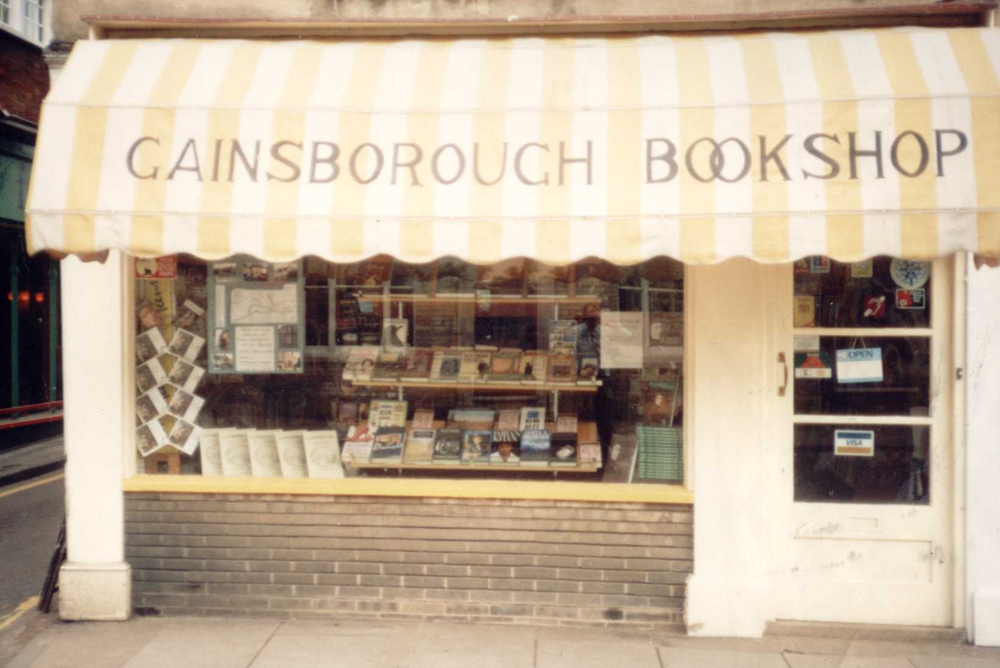

Suffolk – Sudbury – Local Villages – Countryside – Gainsborough – Rural Life – East Anglia – Timber Framed Buildings

This site preserves the memory of the Gainsborough Bookshop, an independent bookshop that served Sudbury and the surrounding area for many years.
| The Original Website | |
| Dick Oldershaw | History of the Shop | About/Contact |